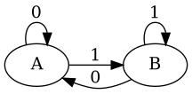

Too late now
OCaml state machines
The goal, type correct state machines
OCaml has great type inference and functions permeate the language. Coupling these, how do we design not only a type safe mechanism for state machines but a type correct one?
Type correct, what?
Type safety gives us things like exhaustive matching on variants but I want a way of preventing certain transitions in a state machine at the type level so our machine can be (more) statically correct.
The example state machine
We have two states: A and B, and two inputs 0 and 1.
The machine is as follows:

Or in table form:
| From \ To | A | B |
|---|---|---|
| A | 0 | 1 |
| B | 0 | 1 |
Attempt one, variants
Variants, or algebraic datatypes, give us nice ways of doing enumerations at
the type level which can be matched on, perfect for limited sets of states
and inputs.
type state = A | B
type input = Zero | One
(* state *)
let initial = A
(* state -> input -> state *)
let transition s i =
match (s, i) with
| A, Zero -> A
| A, One -> B
| B, Zero -> A
| B, One -> B
This gives us a complete implementation with an exhaustively checked match
statement in the transitions function. This is useful as it specifies the
transitions but requires us to look into the code to see what transitions are
possible from a given state so this isn’t typey enough for me.
Attempt two, polymorphic Variants
Polymorphic variants, super powered variants (kinda), allow us to have enumerations of states but can appear in type signatures as their individual atoms.
type state = [ `A | `B ]
type input = [ `Zero | `One ]
(* [> `A ] *)
let initial = `A
(* [< `A | `B ] -> [< `One | `Zero ] -> [> `A | `B ] *)
let transition s i =
match (s, i) with
| `A, `Zero -> `A
| `A, `One -> `B
| `B, `Zero -> `A
| `B, `One -> `B
This may seem like I’ve just added backticks before the names of our states and
inputs (and that is what I did) but we also gained some different type
signatures, look at initial for instance, which will lead us to attempt
three.
Attempt three, transition functions
From attempt two we could see that our states and inputs are split up in the type system. How about we make that more useful?
type state = [ `A | `B ]
(* [> `A ] *)
let initial = `A
(* [< `A | `B ] -> [> `A ] *)
let zero = function `A | `B -> `A
(* [< `A | `B ] -> [> `B ] *)
let one = function `A | `B -> `B
(* [< `One | `Zero ] -> [< `A | `B ] -> [> `A | `B ] *)
let input_to_function = function `Zero -> zero | `One -> one
(* [< `A | `B ] -> [< `One | `Zero ] -> [> `A | `B ] *)
let transition s = function `Zero -> zero s | `One -> one s
This allows us to now create functions representing the transitions for a given
input and the type signatures show us the possible next states. The typical
transition function can also be constructed from this to fold over inputs.
I like this last attempt due to the explicitness of the transition functions and the fact that it extends to state machines where not all states may accept all inputs. Particularly useful for modelling protocols which may have short circuiting for errors or unique inputs for a subset of states.